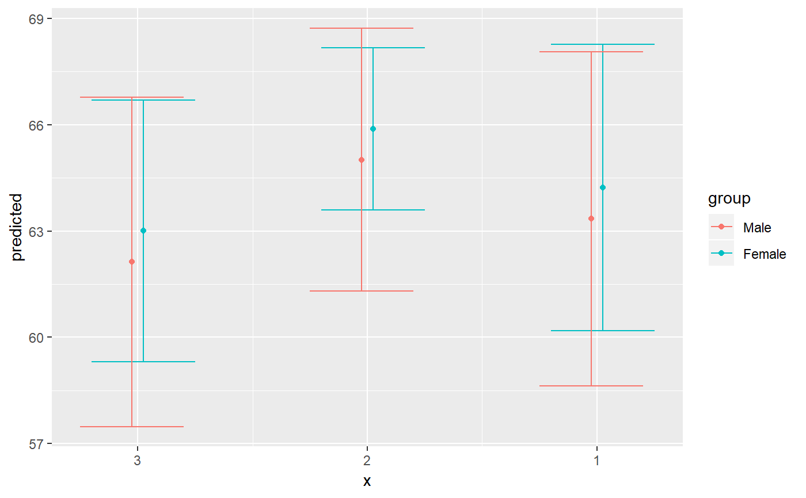
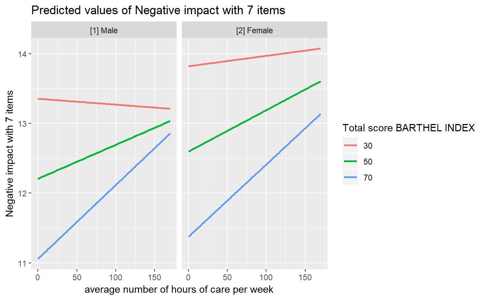

Get marginal effects from model terms
Source:R/ggaverage.R, R/ggeffect.R, R/ggpredict.R
ggpredict.Rdggpredict() computes predicted (fitted) values for the
response, at the margin of specific values from certain model terms,
where additional model terms indicate the grouping structure.
ggeffect() computes marginal effects by internally calling
Effect. ggaverage() computes the average
predicted values. The result is returned as tidy data frame.
ggaverage(model, terms, ci.lvl = 0.95, type = c("fe", "re", "fe.zi", "re.zi"), typical = "mean", ppd = FALSE, x.as.factor = FALSE, condition = NULL, ...) ggeffect(model, terms, ci.lvl = 0.95, x.as.factor = FALSE, ...) ggpredict(model, terms, ci.lvl = 0.95, type = c("fe", "re", "fe.zi", "re.zi", "surv", "cumhaz", "debug"), typical = "mean", condition = NULL, ppd = FALSE, x.as.factor = FALSE, full.data = FALSE, vcov.fun = NULL, vcov.type = NULL, vcov.args = NULL, ...)
Arguments
| model | A fitted model object, or a list of model objects. Any model
that supports common methods like |
|---|---|
| terms | Character vector (or a formula) with the names of those terms
from |
| ci.lvl | Numeric, the level of the confidence intervals. For |
| type | Character, only applies for mixed effects models and/or models with zero-inflation.
|
| typical | Character vector, naming the function to be applied to the
covariates over which the effect is "averaged". The default is "mean".
See |
| ppd | Logical, if |
| x.as.factor | Logical, if |
| condition | Named character vector, which indicates covariates that
should be held constant at specific values. Unlike |
| ... | For |
| full.data | Logical, if |
| vcov.fun | String, indicating the name of the |
| vcov.type | Character vector, specifying the estimation type for the
robust covariance matrix estimation (see |
| vcov.args | List of named vectors, used as additional arguments that
are passed down to |
Value
A data frame (with ggeffects class attribute) with consistent data columns:
xthe values of the first term in
terms, used as x-position in plots.predictedthe predicted values of the response, used as y-position in plots.
conf.lowthe lower bound of the confidence interval for the predicted values.
conf.highthe upper bound of the confidence interval for the predicted values.
observedif
full.data = TRUE, this columns contains the observed values (the response vector).residualsif
full.data = TRUE, this columns contains residuals.groupthe grouping level from the second term in
terms, used as grouping-aesthetics in plots.facetthe grouping level from the third term in
terms, used to indicate facets in plots.
For proportional odds logistic regression (see polr)
resp. cumulative link models (e.g., see clm),
an additional column response.level is returned, which indicates
the grouping of predictions based on the level of the model's response.
Details
Supported Models
Currently supported model-objects are: lm, glm, glm.nb,
lme, lmer, glmer, glmer.nb, nlmer,
glmmTMB, gam, vgam, gamm, gamm4,
multinom, betareg, gls, gee, plm,
lrm, polr, clm, hurdle, zeroinfl,
svyglm, svyglm.nb, truncreg, coxph,
stanreg, brmsfit, lmRob, glmRob, brglm
and rlm.
Other models not listed here are passed to a generic predict-function
and might work as well, or maybe with ggeffect(), which
effectively does the same as ggpredict(). The main difference
is that ggpredict() calls predict(), while ggeffect()
calls Effect to compute marginal effects.
Difference between ggpredict() and ggeffect()
ggpredict() and ggeffect() differ in how factors are
held constant: ggpredict() uses the reference level, while
ggeffect() computes a kind of "average" value, which represents
the proportions of each factor's category.
Marginal Effects at Specific Values
Specific values of model terms can be specified via the terms-argument.
Indicating levels in square brackets allows for selecting only
specific groups or values resp. value ranges. Term name and levels in
brackets must be separated by a whitespace character, e.g.
terms = c("age", "education [1,3]"). Numeric ranges, separated
with colon, are also allowed: terms = c("education", "age [30:60]").
The terms-argument also supports the same shortcuts as the
values-argument in rprs_values(). So
terms = "age [meansd]" would return predictions for the values
one standard deviation below the mean age, the mean age and
one SD above the mean age. terms = "age [quart2]" would calculate
predictions at the value of the lower, median and upper quartile of age.
Furthermore, it is possible to specify a function name. Values for
predictions will then be transformed, e.g. terms = "income [exp]".
This is useful when model predictors were transformed for fitting the
model and should be back-transformed to the original scale for predictions.
Finally, numeric vectors for which no specific values are given, a
"pretty range" is calculated (see pretty_range), to avoid
memory allocation problems for vectors with many unique values. If a numeric
vector is specified as second or third term (i.e. if this vector represents
a grouping structure), representative values (see rprs_values)
are chosen. If all values for a numeric vector should be used to compute
predictions, you may use e.g. terms = "age [all]". See also
package vignettes.
Holding covariates at constant values
For ggpredict(), if full.data = FALSE, expand.grid()
is called on all unique combinations of model.frame(model)[, terms]
and used as newdata-argument for predict(). In this case,
all remaining covariates that are not specified in terms are
held constant: Numeric values are set to the mean (unless changed with
the condition or typical-argument), factors are set to their
reference level (may also be changed with condition) and character
vectors to their mode (most common element).
ggaverage() computes the average predicted values, by calling
ggpredict() with full.data = TRUE, where argument
newdata = model.frame(model) is used in predict().
Hence, predictions are made on the model data. In this case, all
remaining covariates that are not specified in terms are
not held constant, but vary between observations (and are
kept as they happen to be). The predicted values are then averaged
for each group (if any). Thus, ggpredict() can be considered
as calculating marginal effects at the mean, while ggaverage()
computes average marginal effects.
ggeffect(), by default, sets remaining numeric covariates to
their mean value, while for factors, a kind of "average" value, which
represents the proportions of each factor's category, is used.
Bayesian Regression Models
ggpredict() also works with Stan-models from
the rstanarm or brms-package. The predicted
values are the median value of all drawn posterior samples. The
confidence intervals for Stan-models are actually high density
intervals, computed by hdi, unless ppd = TRUE.
If ppd = TRUE, predictions are based on draws of the posterior
predictive distribution and the uncertainty interval is computed
using predictive_interval. By default (i.e.
ppd = FALSE), the predictions are based on
posterior_linpred and hence have some
limitations: the uncertainty of the error term is not taken into
account. The recommendation is to use the posterior predictive
distribution (posterior_predict).
Note that for binomial models, the newdata-argument
used in posterior_predict() must also contain the vector
with the number of trials. In this case, a dummy-vector is used,
where all values for the response are set to 1.
Zero-Inflated Mixed Models with glmmTMB
If model is of class glmmTMB, bootstrapped confidence
intervals are calculated for predictions conditioned on the zero-inflated
part of the model, when the uncertainty in the random-effect paramters
is ignored (i.e. when type = "fe.zi", see Brooks et al. 2017, pp.391-392
for details). type = "fe.zi" returns predicted values at population
mode, not mean. If predictions are also conditioned on random
effects (i.e. type = "re.zi"), predicted values are based on
simulations (see Brooks et al. 2017, pp.392-393 for details).
Note
Since data for ggaverage() comes from the model frame, not all
possible combinations of values in terms might be present in the data,
thus lines or confidence bands from plot() might not span over
the complete x-axis-range.
polr-, clm-models, or more generally speaking, models with
ordinal or multinominal outcomes, have an additional column
response.level, which indicates with which level of the response
variable the predicted values are associated.
The print()-method gives a clean output (especially for predictions
by groups), and indicates at which values covariates were held constant.
Furthermore, the print()-method has the arguments digits and
n, to control number of decimals and lines to be printed.
References
Brooks ME, Kristensen K, Benthem KJ van, Magnusson A, Berg CW, Nielsen A, et al. glmmTMB Balances Speed and Flexibility Among Packages for Zero-inflated Generalized Linear Mixed Modeling. The R Journal. 2017;9: 378–400.
Examples
data(efc) fit <- lm(barthtot ~ c12hour + neg_c_7 + c161sex + c172code, data = efc) ggpredict(fit, terms = "c12hour")#> #> # Predicted values for Total score BARTHEL INDEX #> # x = average number of hours of care per week #> #> x predicted conf.low conf.high #> 0 75.444 73.257 77.630 #> 5 74.177 72.098 76.256 #> 10 72.911 70.931 74.890 #> 15 71.644 69.753 73.535 #> 20 70.378 68.564 72.191 #> 25 69.111 67.361 70.861 #> 30 67.845 66.144 69.545 #> 35 66.578 64.911 68.245 #> 40 65.312 63.661 66.962 #> 45 64.045 62.393 65.697 #> ... and 25 more rows. #> #> Adjusted for: #> * neg_c_7 = 11.84 #> * c161sex = 1.76 #> * c172code = 1.97 #>ggpredict(fit, terms = "c12hour", full.data = TRUE)#> #> # Predicted values for Total score BARTHEL INDEX #> # x = average number of hours of care per week #> #> x predicted conf.low conf.high observed residuals #> 4 78.205 74.685 81.724 80 1.795 #> 4 84.773 80.901 88.646 75 -9.773 #> 4 78.600 74.273 82.927 75 -3.600 #> 4 83.195 78.692 87.697 100 16.805 #> 4 74.006 69.678 78.333 95 20.994 #> 4 74.329 71.999 76.658 15 -59.329 #> 4 69.734 67.127 72.341 50 -19.734 #> 4 65.140 62.022 68.258 95 29.860 #> 4 71.708 67.313 76.104 95 23.292 #> 4 74.329 71.999 76.658 80 5.671 #> ... and 805 more rows. #> #>ggpredict(fit, terms = c("c12hour", "c172code"))#> #> # Predicted values for Total score BARTHEL INDEX #> # x = average number of hours of care per week #> #> # low level of education #> x predicted conf.low conf.high #> 0 74.746 71.266 78.227 #> 5 73.480 70.080 76.880 #> 10 72.213 68.887 75.540 #> 15 70.947 67.686 74.207 #> 20 69.680 66.478 72.883 #> 25 68.414 65.262 71.566 #> 30 67.147 64.037 70.257 #> 35 65.881 62.804 68.958 #> 40 64.614 61.561 67.668 #> 45 63.348 60.309 66.387 #> ... and 25 more rows. #> #> # intermediate level of education #> x predicted conf.low conf.high #> 0 75.465 73.282 77.647 #> 5 74.198 72.123 76.273 #> 10 72.932 70.955 74.909 #> 15 71.665 69.777 73.554 #> 20 70.399 68.587 72.211 #> 25 69.132 67.383 70.881 #> 30 67.866 66.165 69.566 #> 35 66.599 64.931 68.267 #> 40 65.333 63.680 66.985 #> 45 64.066 62.412 65.720 #> ... and 25 more rows. #> #> # high level of education #> x predicted conf.low conf.high #> 0 76.183 72.816 79.550 #> 5 74.917 71.604 78.229 #> 10 73.650 70.384 76.916 #> 15 72.384 69.155 75.612 #> 20 71.117 67.918 74.316 #> 25 69.851 66.672 73.029 #> 30 68.584 65.417 71.751 #> 35 67.318 64.153 70.482 #> 40 66.051 62.880 69.223 #> 45 64.785 61.597 67.972 #> ... and 25 more rows. #> #> Adjusted for: #> * neg_c_7 = 11.84 #> * c161sex = 1.76 #>ggpredict(fit, terms = c("c12hour", "c172code", "c161sex"))#> #> # Predicted values for Total score BARTHEL INDEX #> # x = average number of hours of care per week #> #> # low level of education #> # [1] Male #> x predicted conf.low conf.high #> 0 73.954 69.354 78.554 #> 5 72.688 68.143 77.233 #> 10 71.421 66.925 75.917 #> 15 70.155 65.702 74.607 #> 20 68.888 64.472 73.304 #> 25 67.622 63.237 72.007 #> 30 66.355 61.995 70.716 #> 35 65.089 60.746 69.431 #> 40 63.822 59.490 68.154 #> 45 62.556 58.228 66.883 #> ... and 25 more rows. #> #> # low level of education #> # [2] Female #> x predicted conf.low conf.high #> 0 74.996 71.406 78.585 #> 5 73.729 70.219 77.239 #> 10 72.463 69.026 75.899 #> 15 71.196 67.826 74.566 #> 20 69.930 66.618 73.241 #> 25 68.663 65.403 71.924 #> 30 67.397 64.179 70.614 #> 35 66.130 62.947 69.313 #> 40 64.864 61.706 68.021 #> 45 63.597 60.456 66.738 #> ... and 25 more rows. #> #> # intermediate level of education #> # [1] Male #> x predicted conf.low conf.high #> 0 74.673 71.055 78.290 #> 5 73.406 69.846 76.966 #> 10 72.139 68.629 75.650 #> 15 70.873 67.404 74.342 #> 20 69.606 66.171 73.042 #> 25 68.340 64.931 71.749 #> 30 67.073 63.681 70.465 #> 35 65.807 62.424 69.190 #> 40 64.540 61.158 67.923 #> 45 63.274 59.883 66.665 #> ... and 25 more rows. #> #> # intermediate level of education #> # [2] Female #> x predicted conf.low conf.high #> 0 75.714 73.313 78.115 #> 5 74.447 72.146 76.748 #> 10 73.181 70.972 75.390 #> 15 71.914 69.787 74.041 #> 20 70.648 68.592 72.703 #> 25 69.381 67.385 71.378 #> 30 68.115 66.165 70.065 #> 35 66.848 64.931 68.766 #> 40 65.582 63.682 67.482 #> 45 64.315 62.418 66.213 #> ... and 25 more rows. #> #> # high level of education #> # [1] Male #> x predicted conf.low conf.high #> 0 75.391 71.040 79.741 #> 5 74.124 69.810 78.439 #> 10 72.858 68.573 77.143 #> 15 71.591 67.330 75.853 #> 20 70.325 66.080 74.570 #> 25 69.058 64.823 73.294 #> 30 67.792 63.559 72.025 #> 35 66.525 62.288 70.762 #> 40 65.259 61.011 69.507 #> 45 63.992 59.727 68.258 #> ... and 25 more rows. #> #> # high level of education #> # [2] Female #> x predicted conf.low conf.high #> 0 76.432 72.887 79.977 #> 5 75.166 71.674 78.657 #> 10 73.899 70.454 77.345 #> 15 72.633 69.226 76.040 #> 20 71.366 67.989 74.743 #> 25 70.100 66.744 73.455 #> 30 68.833 65.491 72.175 #> 35 67.567 64.229 70.904 #> 40 66.300 62.958 69.642 #> 45 65.034 61.679 68.388 #> ... and 25 more rows. #> #> Adjusted for: #> * neg_c_7 = 11.84 #># specified as formula ggpredict(fit, terms = ~ c12hour + c172code + c161sex)#> #> # Predicted values for Total score BARTHEL INDEX #> # x = average number of hours of care per week #> #> # low level of education #> # [1] Male #> x predicted conf.low conf.high #> 0 73.954 69.354 78.554 #> 5 72.688 68.143 77.233 #> 10 71.421 66.925 75.917 #> 15 70.155 65.702 74.607 #> 20 68.888 64.472 73.304 #> 25 67.622 63.237 72.007 #> 30 66.355 61.995 70.716 #> 35 65.089 60.746 69.431 #> 40 63.822 59.490 68.154 #> 45 62.556 58.228 66.883 #> ... and 25 more rows. #> #> # low level of education #> # [2] Female #> x predicted conf.low conf.high #> 0 74.996 71.406 78.585 #> 5 73.729 70.219 77.239 #> 10 72.463 69.026 75.899 #> 15 71.196 67.826 74.566 #> 20 69.930 66.618 73.241 #> 25 68.663 65.403 71.924 #> 30 67.397 64.179 70.614 #> 35 66.130 62.947 69.313 #> 40 64.864 61.706 68.021 #> 45 63.597 60.456 66.738 #> ... and 25 more rows. #> #> # intermediate level of education #> # [1] Male #> x predicted conf.low conf.high #> 0 74.673 71.055 78.290 #> 5 73.406 69.846 76.966 #> 10 72.139 68.629 75.650 #> 15 70.873 67.404 74.342 #> 20 69.606 66.171 73.042 #> 25 68.340 64.931 71.749 #> 30 67.073 63.681 70.465 #> 35 65.807 62.424 69.190 #> 40 64.540 61.158 67.923 #> 45 63.274 59.883 66.665 #> ... and 25 more rows. #> #> # intermediate level of education #> # [2] Female #> x predicted conf.low conf.high #> 0 75.714 73.313 78.115 #> 5 74.447 72.146 76.748 #> 10 73.181 70.972 75.390 #> 15 71.914 69.787 74.041 #> 20 70.648 68.592 72.703 #> 25 69.381 67.385 71.378 #> 30 68.115 66.165 70.065 #> 35 66.848 64.931 68.766 #> 40 65.582 63.682 67.482 #> 45 64.315 62.418 66.213 #> ... and 25 more rows. #> #> # high level of education #> # [1] Male #> x predicted conf.low conf.high #> 0 75.391 71.040 79.741 #> 5 74.124 69.810 78.439 #> 10 72.858 68.573 77.143 #> 15 71.591 67.330 75.853 #> 20 70.325 66.080 74.570 #> 25 69.058 64.823 73.294 #> 30 67.792 63.559 72.025 #> 35 66.525 62.288 70.762 #> 40 65.259 61.011 69.507 #> 45 63.992 59.727 68.258 #> ... and 25 more rows. #> #> # high level of education #> # [2] Female #> x predicted conf.low conf.high #> 0 76.432 72.887 79.977 #> 5 75.166 71.674 78.657 #> 10 73.899 70.454 77.345 #> 15 72.633 69.226 76.040 #> 20 71.366 67.989 74.743 #> 25 70.100 66.744 73.455 #> 30 68.833 65.491 72.175 #> 35 67.567 64.229 70.904 #> 40 66.300 62.958 69.642 #> 45 65.034 61.679 68.388 #> ... and 25 more rows. #> #> Adjusted for: #> * neg_c_7 = 11.84 #># only range of 40 to 60 for variable 'c12hour' ggpredict(fit, terms = "c12hour [40:60]")#> #> # Predicted values for Total score BARTHEL INDEX #> # x = average number of hours of care per week #> #> x predicted conf.low conf.high #> 40 65.312 63.661 66.962 #> 41 65.058 63.409 66.708 #> 42 64.805 63.156 66.454 #> 43 64.552 62.902 66.201 #> 44 64.298 62.648 65.949 #> 45 64.045 62.393 65.697 #> 46 63.792 62.138 65.446 #> 47 63.538 61.881 65.196 #> 48 63.285 61.624 64.946 #> 49 63.032 61.367 64.697 #> ... and 11 more rows. #> #> Adjusted for: #> * neg_c_7 = 11.84 #> * c161sex = 1.76 #> * c172code = 1.97 #># using "summary()" shows that covariate "neg_c_7" is held # constant at a value of 11.84 (its mean value). To use a # different value, use "condition" ggpredict(fit, terms = "c12hour [40:60]", condition = c(neg_c_7 = 20))#> #> # Predicted values for Total score BARTHEL INDEX #> # x = average number of hours of care per week #> #> x predicted conf.low conf.high #> 40 46.562 42.582 50.541 #> 41 46.308 42.337 50.279 #> 42 46.055 42.092 50.018 #> 43 45.802 41.847 49.757 #> 44 45.548 41.601 49.496 #> 45 45.295 41.355 49.235 #> 46 45.042 41.109 48.975 #> 47 44.789 40.862 48.715 #> 48 44.535 40.615 48.455 #> 49 44.282 40.368 48.196 #> ... and 11 more rows. #> #> Adjusted for: #> * c161sex = 1.76 #> * c172code = 1.97 #># to plot ggeffects-objects, you can use the 'plot()'-function. # the following examples show how to build your ggplot by hand. # plot predicted values, remaining covariates held constant library(ggplot2) mydf <- ggpredict(fit, terms = "c12hour") ggplot(mydf, aes(x, predicted)) + geom_line() + geom_ribbon(aes(ymin = conf.low, ymax = conf.high), alpha = .1)# with "full.data = TRUE", remaining covariates vary between # observations, so fitted values can be plotted mydf <- ggpredict(fit, terms = "c12hour", full.data = TRUE) ggplot(mydf, aes(x, predicted)) + geom_point()# you can add a smoothing-geom to show the linear trend of fitted values ggplot(mydf, aes(x, predicted)) + geom_smooth(method = "lm", se = FALSE) + geom_point()# three variables, so we can use facets and groups mydf <- ggpredict( fit, terms = c("c12hour", "c161sex", "c172code"), full.data = TRUE ) ggplot(mydf, aes(x = x, y = predicted, colour = group)) + stat_smooth(method = "lm", se = FALSE) + facet_wrap(~facet, ncol = 2)# average marginal effects mydf <- ggaverage(fit, terms = c("c12hour", "c172code")) ggplot(mydf, aes(x = x, y = predicted, colour = group)) + stat_smooth(method = "lm", se = FALSE)# select specific levels for grouping terms mydf <- ggpredict(fit, terms = c("c12hour", "c172code [1,3]", "c161sex")) ggplot(mydf, aes(x = x, y = predicted, colour = group)) + stat_smooth(method = "lm", se = FALSE) + facet_wrap(~facet) + labs( y = get_y_title(mydf), x = get_x_title(mydf), colour = get_legend_title(mydf) )# level indication also works for factors with non-numeric levels # and in combination with numeric levels for other variables library(sjlabelled) data(efc) efc$c172code <- as_label(efc$c172code) fit <- lm(barthtot ~ c12hour + neg_c_7 + c161sex + c172code, data = efc) ggpredict(fit, terms = c("c12hour", "c172code [low level of education, high level of education]", "c161sex [1]"))#> #> # Predicted values for Total score BARTHEL INDEX #> # x = average number of hours of care per week #> #> # low level of education #> x predicted conf.low conf.high facet #> 0 72.813 67.912 77.714 [1] Male #> 5 71.547 66.697 76.396 [1] Male #> 10 70.281 65.477 75.084 [1] Male #> 15 69.015 64.252 73.777 [1] Male #> 20 67.748 63.021 72.476 [1] Male #> 25 66.482 61.783 71.181 [1] Male #> 30 65.216 60.540 69.892 [1] Male #> 35 63.950 59.291 68.609 [1] Male #> 40 62.684 58.035 67.333 [1] Male #> 45 61.418 56.774 66.062 [1] Male #> ... and 25 more rows. #> #> # high level of education #> x predicted conf.low conf.high facet #> 0 74.030 69.233 78.826 [1] Male #> 5 72.763 68.000 77.527 [1] Male #> 10 71.497 66.761 76.234 [1] Male #> 15 70.231 65.516 74.947 [1] Male #> 20 68.965 64.265 73.666 [1] Male #> 25 67.699 63.007 72.390 [1] Male #> 30 66.433 61.744 71.122 [1] Male #> 35 65.167 60.475 69.859 [1] Male #> 40 63.901 59.199 68.602 [1] Male #> 45 62.634 57.917 67.352 [1] Male #> ... and 25 more rows. #> #> Adjusted for: #> * neg_c_7 = 11.84 #># use categorical value on x-axis, use axis-labels, add error bars dat <- ggpredict(fit, terms = c("c172code", "c161sex")) ggplot(dat, aes(x, predicted, colour = group)) + geom_point(position = position_dodge(.1)) + geom_errorbar( aes(ymin = conf.low, ymax = conf.high), position = position_dodge(.1) ) + scale_x_continuous(breaks = 1:3, labels = get_x_labels(dat))# 3-way-interaction with 2 continuous variables data(efc) # make categorical efc$c161sex <- as_factor(efc$c161sex) fit <- lm(neg_c_7 ~ c12hour * barthtot * c161sex, data = efc) # select only levels 30, 50 and 70 from continuous variable Barthel-Index dat <- ggpredict(fit, terms = c("c12hour", "barthtot [30,50,70]", "c161sex")) ggplot(dat, aes(x = x, y = predicted, colour = group)) + stat_smooth(method = "lm", se = FALSE, fullrange = TRUE) + facet_wrap(~facet) + labs( colour = get_legend_title(dat), x = get_x_title(dat), y = get_y_title(dat), title = get_title(dat) )# or with ggeffects' plot-method# NOT RUN { plot(dat, ci = FALSE) # }# use factor levels as x-column in returned data frame data(efc) efc$c161sex <- as_label(efc$c161sex) fit <- lm(neg_c_7 ~ c12hour + c161sex, data = efc) ggpredict(fit, terms = "c161sex", x.as.factor = TRUE)#> #> # Predicted values for Negative impact with 7 items #> # x = carer's gender #> #> x predicted conf.low conf.high #> Male 11.512 11.009 12.014 #> Female 11.960 11.679 12.240 #> #> Adjusted for: #> * c12hour = 42.28 #># marginal effects for polynomial terms data(efc) fit <- glm( tot_sc_e ~ c12hour + e42dep + e17age + I(e17age^2) + I(e17age^3), data = efc, family = poisson() ) ggeffect(fit, terms = "e17age")#> #> # Predicted incidents for Services for elderly #> # x = elder' age #> #> x predicted conf.low conf.high #> 64 1.369 1.040 1.801 #> 66 1.149 0.968 1.364 #> 68 1.017 0.899 1.150 #> 70 0.942 0.840 1.057 #> 72 0.906 0.805 1.020 #> 74 0.899 0.800 1.010 #> 76 0.912 0.818 1.016 #> 78 0.939 0.852 1.036 #> 80 0.975 0.890 1.068 #> 82 1.012 0.921 1.111 #> ... and 11 more rows. #> #>